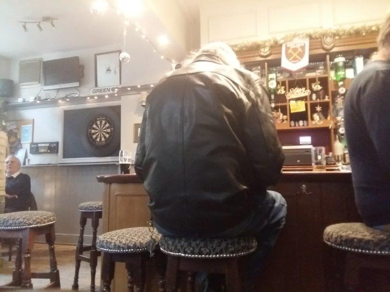

JIMMY BOOZERS' PHOTOS

×

Back in the east end. Mile End. I always have that Pulp song from Trainspotting in my head whenever I pass here. "Begbie's psycho, man! But he's a mate and all. So what can you do?". There's a trendy bar right at the station with bicycles and hipsters written all over. The "cool" graffiti drawing you in like shiny tinfoil to the stoners. Do yourself a favour and walk away from it. Instead head round the back of the station for the Wentworth Arms. As I approach an old geezer is outside, smoking. Looks like a character and a half, maybe pished already, 2 o clock on a Sunday. Promising. It's relatively busy inside, yet eerily quiet as I enter, and an uneasy stare sets upon me. Everyone wondering "who the fuck is this guy?". This is the sort of atmosphere relish though. I order a pint politely and everyone relaxes. The bar lady is sound. £4.30 a Guinness. Could be better. But this is a family boozer so can't slag. Everyone knows each other here, except me, yet I feel extremely comfortable. It turns out the guy outside works here as well. He isn't pished but is drinking. There is football on as well. There's no commentary but I'm actually glad as it's not a big game, and I'd rather listen to the absolute geezers at the bar. I'm not disappointed. The way a cockney tells a story cannot be beat. All having a laugh together. Supporting each other. The people need the pub and the pub need the people. Summary Good Boozer in the area
Bevvie Value - 3/5
Football Viewing Arrangements - 4/5
Fellow Clientele - 4/5
Banter & Vibe - 4/5
127 Eric St, Mile End, London E3 4SR, UK